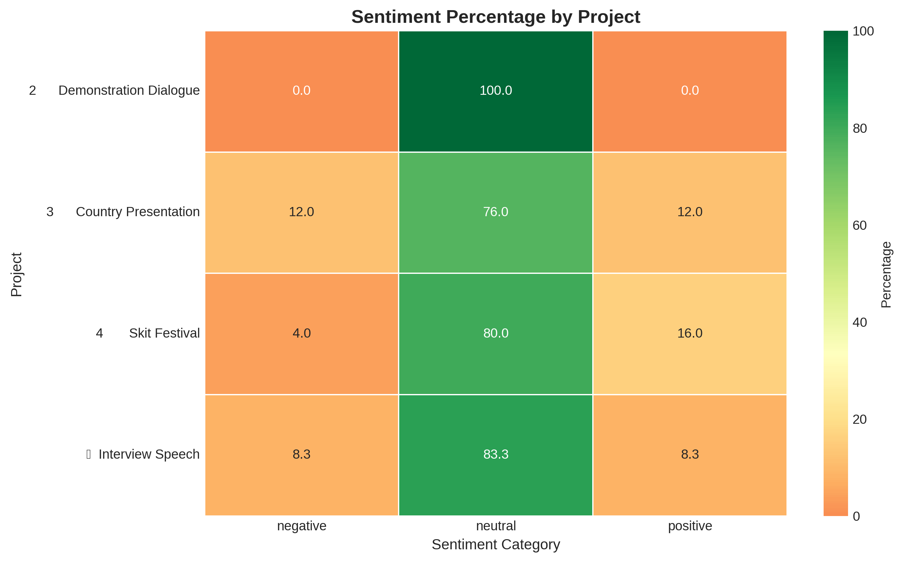

BERT-based Japanese Class Feedback Sentiment Analysis
Project Overview
This project applies a deep learning–based natural language processing approach to analyze
Japanese student feedback collected from project-based English classes. Using a pretrained
Japanese BERT model, free-text responses were automatically classified into positive,
negative, and neutral sentiment categories, enabling scalable and context-aware analysis of
student perceptions.
An earlier exploratory version of this project (2023) focused on morphological analysis and
keyword extraction. In 2025, the project was reviewed and redesigned to focus specifically
on sentiment analysis using a modern deep learning language model.
Project Details
Timeline: 2025 (project revision) Location: High School ESL Program, Japan Dataset: 120+ anonymized student feedback responses Language: Japanese
Methodology
Data Collection:
Student feedback was collected via Google Forms following project-based learning
activities across four curriculum units.
Preprocessing:
Responses were cleaned, anonymized, and standardized to prepare free-text Japanese input
for model inference.
Sentiment Classification:
A pretrained Japanese BERT model was used to classify each response into
positive, negative, or neutral sentiment categories based on sentence-level context.
Analysis:
Sentiment distributions were aggregated by project type to identify patterns in student
satisfaction and perceived difficulty.
Visualization:
Results were communicated using sentiment distribution charts and project-level
comparisons to support instructional decision-making.

Key Results & Insights
📈 Clear sentiment trends identified across four project types using
automated classification.
✅ Country Presentation project showed the highest proportion of
positive sentiment, reflecting strong engagement with cultural content.
⚠️ Skit Festival project generated the largest share of negative
sentiment, often linked to time pressure and performance anxiety.
💡 Negative feedback analysis highlighted recurring concerns related
to workload, preparation time, and task difficulty.
🎯 Findings were used to support curriculum adjustments, including
extended timelines and additional instructional scaffolding.
Sentiment analysis revealed that student satisfaction correlated more strongly with task clarity, autonomy, and preparation support than with language difficulty. Creative group projects generated the highest engagement but required explicit scaffolding to mitigate anxiety, while individual research-based projects consistently produced positive sentiment due to clear structure and learner control.
Sample Analysis Output
Example Sentiment Distribution:
Country Presentation → Positive-dominant
Demonstration Dialogue → Mixed sentiment
Skit Festival → Higher negative proportion
Summer Project → Mostly neutral to positive
Data Privacy Notice
All student responses were anonymized and analyzed in aggregate.
Data collection followed institutional consent and privacy guidelines.